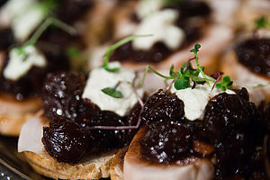

The best finger food: Olive crostini
April 20, 2016 | Eduard Somera
Prep time: 15 minutes
Cook time: 2 minutes
Yield: Makes approximately 24 toasts
Ingredients
1/2 cup black olives
1/2 cup green olives with pimientos
2 medium cloves garlic
1/2 cup fresh grated Parmesan cheese
4 Tbsp butter
2 Tbsp olive oil
1/2 cup Monterey jack cheese, grated
1/4 cup fresh parsley, chopped
1 baguette
Method
- Chop the olives in a food processor. Transfer to medium bowl. With machine running,
drop garlic through the feed tube of the food processor and mince. Add Parmesan, butter,
and olive oil, and process into a paste.
- Add butter mixture to bowl with olives. Fold in jack cheese and parsley.
- Cut baguette into thin slices and spread each slice generously with olive mixture
- Cook under broiler until bubbly and lightly browned - about 2 minutes.
- Serve right out of oven. Helps to make olive mixture in advance and spread right before
you put in the oven.

|
Eduard's cooking
tips
#1
Use a quality bakery bread.
Avoid heavy dense breads that
might be difficult to chew.
#2
Prevent soggy bread by
adding the toppings just
before serving.
#3
Avoid overloading the
toppings so they don’t
fall off.
|